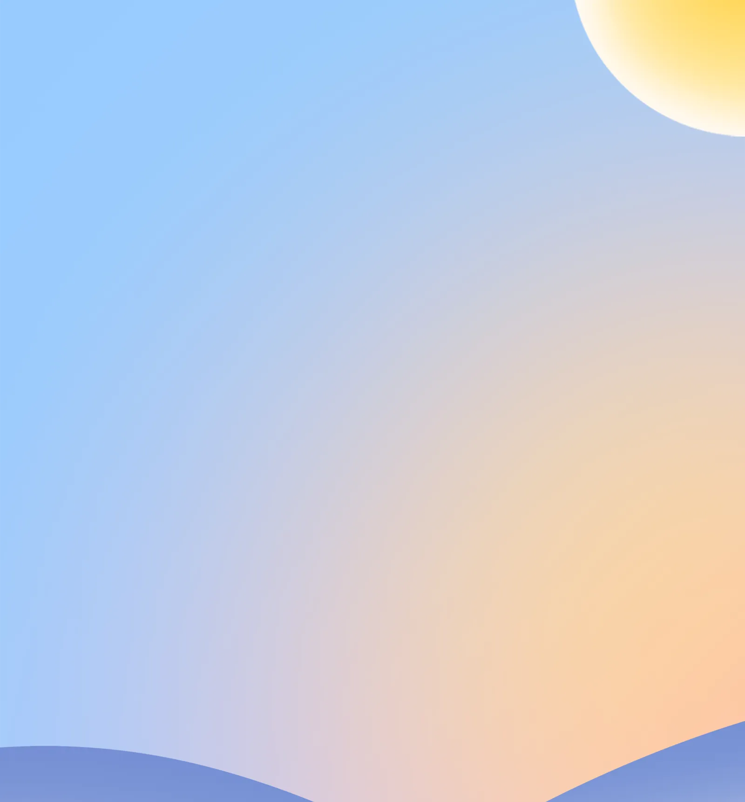
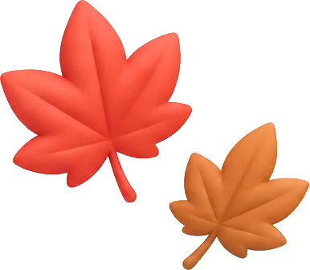
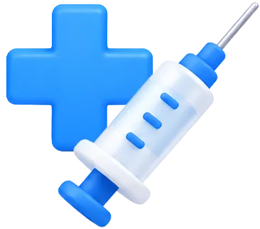

전남광주통합특별시 기간 한정 꿀혜택 · 알아두면 도움되는 9월 4주 소식


한가위 보름달처럼
빵빵한 특별시 정보
이번 주 챙겨야 할 전남광주통합특별시
기간 한정 꿀혜택

가을은 호남관광문화주간
매력 있는 호남으로 오세요
통합특별시와 전북특별자치도가 ‘2026 호남관광문화주간’을 맞아 호남권 대표 관광상품 9종을 출시했어요. 코스만 매력적인 게 아니에요.
모든 코스에는 광주 송정 떡갈비, 무등산 보리밥, 광양 불고기, 여수 게장백반, 보성 꼬막정식, 전주 비빔밥 등 지역 대표 음식 체험까지 할 수 있어요. 이 상품들은 10월 31일까지만 기간 한정으로 판매한다는 사실! 예약은 하나투어 누리집에서 할 수 있답니다.
-

호남권 예술&스파
담양 소쇄원, 광주 국립아시아문화전당·사직공원전망타워, 전주 봉강요 도예체험·구이안덕마을, 전주한옥마을·경기전
-

여수 오션뷰&밍글링
여수섬박람회·해상케이블카·이순신광장·낭만포차·고소동 벽화마을
- 주요 코스
- 호남권 힐링벨트, 호남권 예술&스파, 여수 오션뷰&밍글링, 비엔날레 예술투어 등
- 판매기간
- 까지
- 예약
- 하나투어 누리집

독감 조기 유행에
빠르게 대처합니다
인플루엔자 예방접종 시작
올해 인플루엔자 유행이 빨라졌어요. 예년보다 한 달 이상 빠른 지난 9월 11일 인플루엔자 유행주의보가 발령되었는데요. 시민의 건강 사수를 위해 국가예방접종을 앞당겨 실시합니다.
올해는 유행주의보가 일찍 발령된 만큼 고위험군의 조기 면역 형성이 무엇보다 중요해요. 대상이라면 잊지 말고 접종하세요!
- 대상 및 일정
-
- 어린이(2012. 1. 1.~2026. 8. 31. 출생자)1·2회 접종 대상자: ~
- 임신부(임신이 확인된 사람)~
- 65세 이상(1961. 12. 31. 이전 출생자)75세 이상: ~70세~74세: ~65세~69세: ~
- 백신 및 접종기관
- 위탁의료기관 및 보건소에서
3가 백신 1회 접종
노후 경유차 환경개선부담금
30일까지 납부하세요
배출가스 4·5등급의 노후 경유차 오너라면 2026년 하반기 환경개선부담금 납부 기간 확인하세요. 환경개선부담금은 환경오염 원인자에게 환경개선 비용을 부담하게 하는 제도로 징수된 부담금은 대기 및 수질개선 등 다양한 환경사업 재원으로 활용된답니다.
- 부과대상
- 부터 까지
노후 경유차를 소유한 개인 및 법인 - 납부기간
- ~
- 납부방법
- 전국 모든 금융기관, 인터넷 지로, 위택스, 가상계좌 등 편한 방법으로 납부
도시 농부를 꿈꾼다면?
전남광주농업기술센터로!
전남광주통합특별시 농업기술센터가 농업자원과 재배시설을 활용해 교육, 치유, 체험을 제공하는 ‘토요일엔 농업기술센터’를 운영해요. 총 네 가지 프로그램으로 시민 누구나 참여 가능하니 많은 관심 바랍니다.
- 운영기간
- ~ 매주 토요일 오전 10시~오후 5시
- 프로그램
- 향기식물연구소, 안전농산물연구소, 고구마·콩연구소, 팜(Farm)예술연구소
- 신청방법
- 구글폼으로 사전 신청※ 회차별 잔여인원에 한해 현장접수
- 문의
- 농업기술센터 062-613-5322

자랑하고 싶은 우리 술!
남도 우리술 품평회
참가업체 모집
우리 지역 우수 전통주의 인지도를 높이고 판로를 확대하기 위해 ‘2026 남도 우리술 품평회’ 참가업체를 모집합니다. 총 12점의 우수 제품을 수상작으로 선정하며, 서류심사를 시작으로 오는 11월 6일 광주에서 전문가와 국민품평단이 참여하는 본심사를 거쳐 최종 수상작을 결정할 예정입니다. 우리 것이 좋은 것이여! 자랑스러운 우리 술을 빚는 업체들의 많은 참여 바랍니다.
- 접수기간
- ~
- 분야
- 탁주, 증류주, 약·청주, 기타
- 참가자격
- 주류 제조면허를 소지한 전남광주통합특별시 내 주조장에서 시판 중인 주류※ 최근 3년 이내 대상 수상작 출품 불가
- 접수방법
- 전남광주통합특별시 누리집 신청서 다운로드 후,
해당 소재지 시·구·군청으로 방문신청
특별시 출범 후 첫 개최
장애인 일자리박람회를 열어요
9월 30일 목포에서 열립니다! ‘꿈을 잇다 일을 만나다’를 슬로건으로 전남광주통합특별시 장애인 일자리박람회가 열려요.
현장채용관에서는 28개 구인기업과 상담, 면접도 진행될 예정인데요. 자신의 적성과 역량에 맞는 직업을 찾고 싶다면 꼭 방문해 보세요.
- 날짜
- 장소
- 목포실내체육관
- 대상
- 기업, 장애인 구직자 등
- 프로그램
- 현장채용관, 장애인 일자리정보관, 장애인복지홍보관, 직업체험관, 취업지원관, IT정보관 등